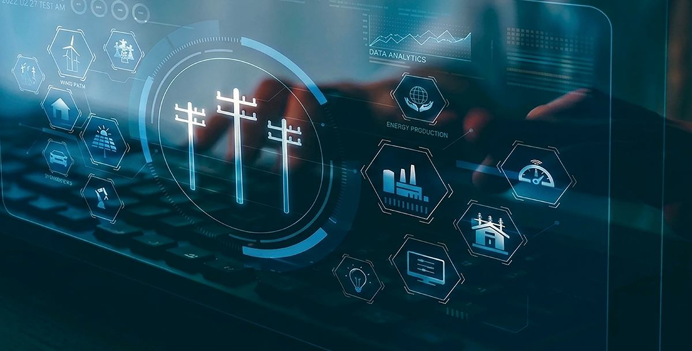
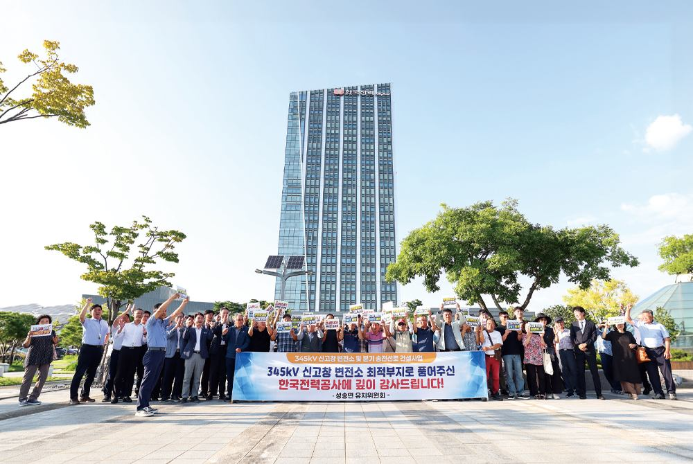

THEME FOCUS
익숙한 세계에 다른 가능성을 상상하다
원고가 들어오면 한 줄 요약이 들어갑니다.
2026.10 vol.640
2026 October vol.640
이달의 키워드
전환
Transition
기억을, 지식을, 이제는 판단까지 기술에 맡기는 시대. 10월호는 ‘전환’ 앞에서 사람이 지켜야 할 자리와 고객·현장·지역에서 이미 시작된 변화를 담았습니다.
SPOTLIGHT · INCEPTION 전환의 시대, 인간의 자리
01
이달의 키워드를 여러 시선으로 깊게 들여다봅니다.
02
지금 한전에서 일어나는 이슈 · 기술 · 현장

ISSUE NOW
영업본부를 고객서비스혁신본부로 바꾼 한전, 9월 혁신 워크숍에서 공개한 비전과 실행 과제.

NEXT WAVE
한전이 자체 개발해 전국에 구축한 ADMS, 보이지 않는 전기의 흐름을 읽고 내일의 계통을 준비한다.

ON SITE
반대 현수막 대신 ‘유치 확정’ 현수막이 걸리기까지, 22번의 설명회와 34개 마을의 만장일치.
KEPCO NEWS
원고가 들어오면 한 줄 요약이 들어갑니다.
03
일상을 넓히는 문화 · 과학 · 여행 · 체험
ART & CULTURE
원고가 들어오면 한 줄 요약이 들어갑니다.
SCIENCE LAB
원고가 들어오면 한 줄 요약이 들어갑니다.
GREEN LIFE
원고가 들어오면 한 줄 요약이 들어갑니다.
TRAVEL MATE
고택의 마루, 서원의 볕, 강 위의 불씨. 오래 쌓인 시간 위에 요즘의 낭만이 포개진 안동의 가을.

REFRESH
사무·배전·안전센터 직원이 한 배에 올랐다. 영월 동강 12㎞를 함께 저어 내려간 하루.
이번 호 기사에 한 표를 던지고, 다음 호 소식을 받아 보세요.